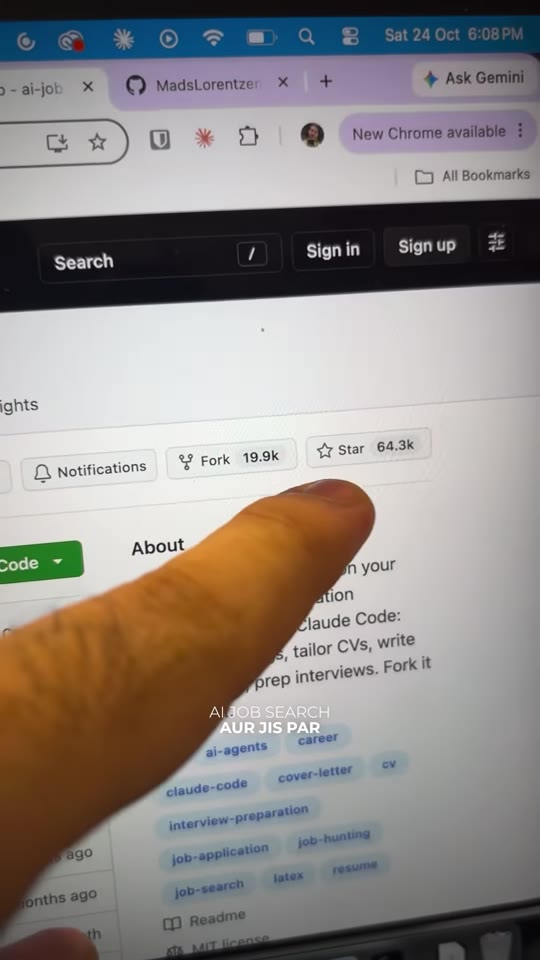
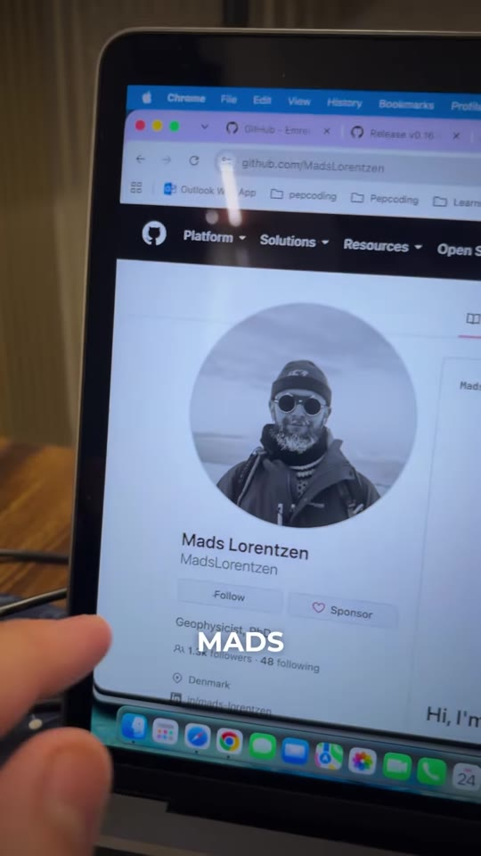

Career · Job-Switch
Automating Job Applications with Claude Code: The ai-job-search Agent Framework
An open-source agentic job application pipeline (ai-job-search, 64.3k+ GitHub stars) built on the Claude Code CLI. Originally developed by Mads Lorentzen following a corporate layoff, the framework runs locally on your machine to continuously discover job openings, evaluate role compatibility, dynamically tailor resumes/CVs to individual job descriptions, generate customized cover letters, formulate interview prep dossiers, and autonomously submit applications.

System Architecture & Workflow
- Attach Master Resume / CV:
- Place your unformatted markdown or LaTeX master CV into the
/cvfolder containing comprehensive experience, skills, and project history. - Specify target job titles, seniority levels, geographic preferences, and domain specializations in the configuration profile.
- Place your unformatted markdown or LaTeX master CV into the
- Automated Role Discovery & Scraping:
- The framework continuously queries major job boards and employer career portals (via Greenhouse, Lever, and Workday scrapers).
- Filters out duplicates and pre-evaluates job descriptions against your experience threshold before downloading full specs.
- Per-Job Resume & Cover Letter Tailoring:
- Uses Claude Code subagents to align keywords and technical requirements between the job description and your master CV without fabricating credentials.
- Drafts an individualized cover letter addressing specific company challenges, products, and culture.
- Autonomous Submission & Interview Prep:
- If granted browser automation credentials, the agent auto-fills application forms and tracks status in a local database.
- Automatically compiles an interview preparation sheet with likely technical and behavioral questions tailored to the applied role.
Repository & Evidence

Verbatim Breakdown
| Timestamp | Screen / Source | Verbatim Content |
|---|---|---|
00:02 |
GitHub profile | Mads Lorentzen • MadsLorentzen Geophysicist, PhD • Denmark |
00:19 |
Spoken (audio) | “Job search ke market ko automate karna hai aur usko hi isne automate kara aur ek GitHub repo banayi. Isne AI engineer ki job bhi le li.” |
00:30 |
On-screen repository | ai-job-search-dev / ai-job-search • Public Branches: master • Folders: .claude, .github, assets/mascot, cover_letters, cv |
00:32 |
On-screen repo about | About: The job search that runs on your machine. An AI application framework built on Claude Code: evaluate postings, tailor CVs, write cover letters, prep interviews. Fork it and own it. Stars: 64.3k • Forks: 19.9k Topics: ai, ai-agents, career, claude-code, cover-letter, cv, interview-preparation, job-application, job-hunting, job-search |
00:35 |
Spoken (audio) | “Matlab tumhe kuch nahi karna bhai, tumhe bas ek apna CV attach karna hai, specialization batani hai, tumhare behalf pe saari job dhoondh-dhoondh ke layega, job description ke according tumhara resume bhi modify karega tumhe bana ke de bhi dega aur agar tumne ise access de diya tumhare behalf pe apply bhi karega.” |
(caption) |
Post Caption | Automate your Job Search using AI😱✨ . . { job, job search, job search update, job switch , job search using AI , interview schedule } |
Prerequisites & Setup
- GitHub Repository:
https://github.com/ai-job-search-dev/ai-job-search - Claude Code Access: Requires Anthropic API key with Claude Code CLI installed locally (
npm install -g @anthropic-ai/claude-code). - Execution: Clone repository locally, configure environment variables, populate master CV, and run the main entry point to initiate continuous search loops.
Try This
- Navigate to
github.com/ai-job-search-dev/ai-job-searchand fork the repository. - Clone to your local workstation:
git clone https://github.com/ai-job-search-dev/ai-job-search.git - Create your profile in
/cv/master_cv.mddetailing your technical stacks, achievements, and impact metrics. - Run the evaluation command against a target job URL to inspect how Claude analyzes skill overlap and dynamically rewrites resume bullet points.
Open Questions
- ATS (Applicant Tracking System) bot-detection: Platforms like Workday and Greenhouse frequently employ Cloudflare turnstiles or reCAPTCHA challenges to block automated script submissions; running the agent in human-in-the-loop mode (generating tailored resumes and letters for manual one-click submission) is more reliable than headless form submission.